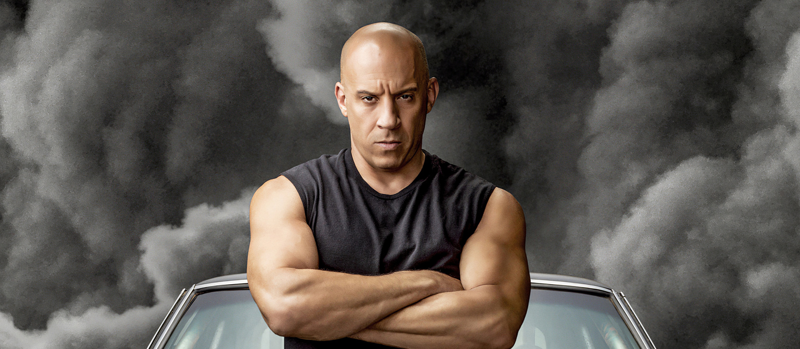

Dominic Toretto
Biography
Dominic "Dom" Toretto is a fictional character and the main protagonist of the Fast & Furious franchise. He is portrayed by Vin Diesel and first appeared on film, alongside fellow protagonist Brian O'Conner, in The Fast and the Furious (2001). Dominic was created by screenwriter Gary Scott Thompson, who was inspired by an article on street racing that was published in the May 1998 issue of Vibe magazine, while Diesel was heavily sought after to play the character. As the patriarch of a group of street racers, Dom acts as an influential voice, being forced into the role as primary caregiver following his father's untimely passing. As the leader, he initially worked as an auto mechanic, but eventually progressed to orchestrating carjackings, a multi-million dollar heist, and illicit jobs for government agencies. Dominic embodies many attributes associated with his position: he is gruff, strong, and preaches morality and loyalty. In many cases, he is also seen to be affectionate and religious, but also possesses a volatile temper, especially when his family is in danger. He is married to Letty Ortiz, with whom he is raising a son. He is also implied to be the group's strongest and most skilled racer, a title that is challenged persistently by Brian. The role propelled Diesel to become a bankable Hollywood star. He won the 2002 and 2014 MTV Movie Awards for Best On-Screen Team with Paul Walker for his performances. Diesel has served as executive producer for the franchise's later installments.